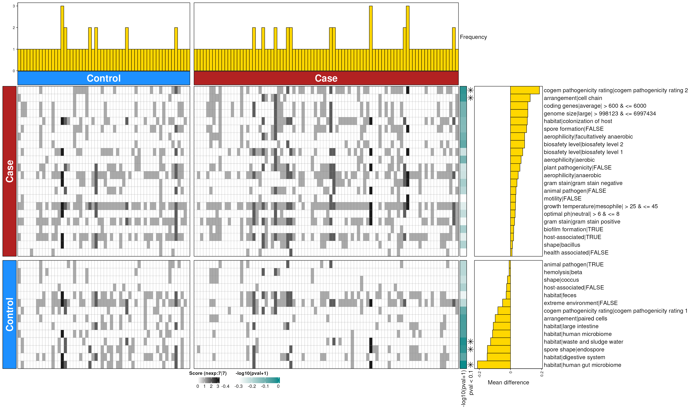
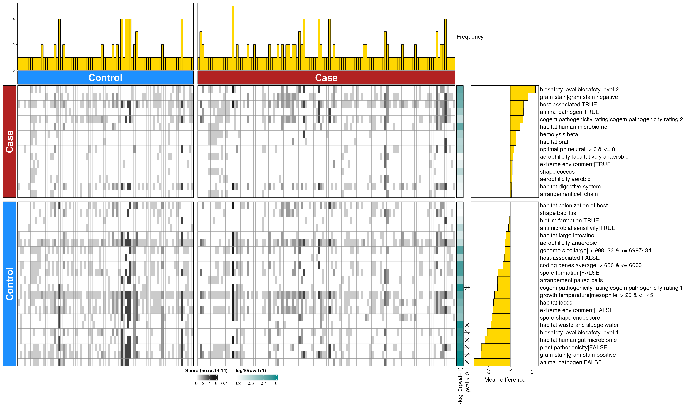
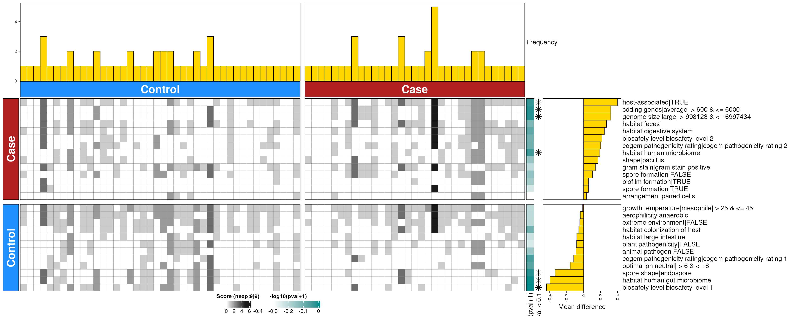
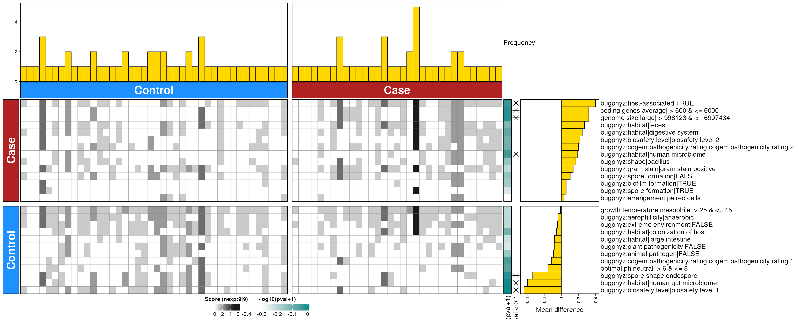
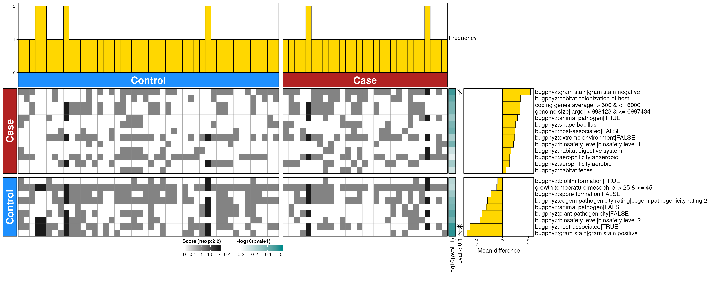
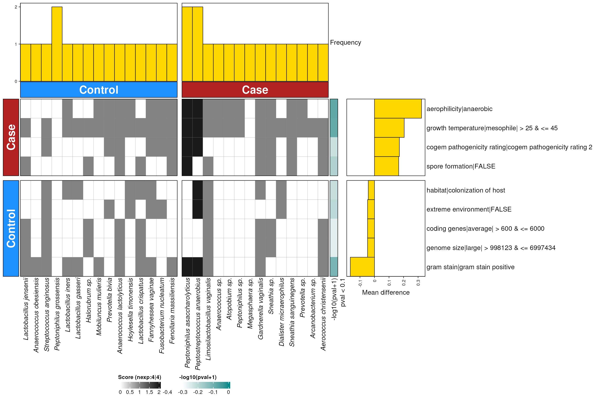

Enrichment with dbBact approach
Source:vignettes/articles/enrichment_dbbact.Rmd
enrichment_dbbact.RmdSetup
library(bugphyzzAnalyses)
library(bugsigdbr)
library(bugphyzz)
library(purrr)
library(dplyr)
library(stringr)
library(tidyr)
library(ComplexHeatmap)
## Variables
body_sites <- c(
skin = "skin", vagina = "vagina", mouth = "mouth", feces = "feces"
)
ranks <- c(genus = "genus", species = "species")
directions <- c(increased = "increased", decreased = "decreased")
perm_var <- 1000
freq_var <- 1Data
Import bugphyzz and create signatures at the genus and species levels:
discrete_types <- c(
"binary", "multistate-intersection", "multistate-union"
)
bp <- importBugphyzz(v = 0.5) |>
map(~ mutate(.x, NCBI_ID = as.character(NCBI_ID))) |>
map(~ {
attr_type <- unique(.x$Attribute_type)
if (attr_type %in% discrete_types) {
df <- .x |>
filter(
!(Validation < 0.7 & Evidence == "asr")
)
} else if (attr_type == "numeric") {
df <- .x |>
filter(
!(Validation < 0.5 & Evidence == "asr")
)
}
df
})
bpSigs_g <- map(bp, ~ {
makeSignatures(
dat = .x, tax_id_type = "NCBI_ID", tax_level = "genus",
min_size = 10
)
}) |>
list_flatten(name_spec = "{inner}") |>
discard(is.null)
bpSigs_s <- map(bp, ~ {
makeSignatures(
dat = .x, tax_id_type = "NCBI_ID", tax_level = "species",
min_size = 10
)
}) |>
list_flatten(name_spec = "{inner}") |>
discard(is.null)Import BugSigDB:
bsdb_doi <- "10.5281/zenodo.10627578" # v1.2.1
bsdb <- importBugSigDB(version = bsdb_doi)
bsdb <- bsdb |>
filter(`Host species` == "Homo sapiens") |>
filter(`Abundance in Group 1` %in% c("increased", "decreased")) |>
filter(!is.na(`Body site`)) |>
mutate(exp = sub("^(bsdb:\\d+/\\d+)/\\d+", "\\1", `BSDB ID`))
dim(bsdb)
#> [1] 3242 51Subset by body site:
uberon <- getOntology(onto = "uberon")
#> Loading required namespace: ontologyIndex
bsdb_subsets_by_bodysite <- vector("list", length(body_sites))
names(bsdb_subsets_by_bodysite) <- body_sites
for (i in seq_along(bsdb_subsets_by_bodysite)) {
if (body_sites[i] == "skin") { ## Didn't find an ontology for skin
bsdb_subsets_by_bodysite[[i]] <- bsdb |>
filter(grepl(body_sites[i], `Body site`, ignore.case = TRUE))
} else {
bsdb_subsets_by_bodysite[[i]] <- subsetByOntology(
bsdb, column = "Body site", term = body_sites[i], ontology = uberon
)
}
}Table summary 1
nexp_summary <- dats |>
map(~ {
.x$increased |>
count(Condition, name = "nexp") |>
filter(nexp > 5)
}) |>
bind_rows(.id = "bsite") |>
group_by(bsite) |>
slice_max(order_by = nexp, n = 10) |>
ungroup()
myDataTable(nexp_summary)
row_dat_list <- list()Obesity - feces
obs_dat <- dats$feces$increased |> # It doesn't matter here if it's increased or decreased
filter(Condition == "Obesity")
## Got these experiments with manual inspection of the data.frame
obs_exps = c(
"bsdb:101/1",
"bsdb:149/1",
"bsdb:33/1",
"bsdb:338/1",
"bsdb:338/2",
"bsdb:345/1",
"bsdb:347/1",
"bsdb:348/1",
"bsdb:348/3",
"bsdb:350/1",
"bsdb:350/2",
"bsdb:351/1",
"bsdb:354/1",
"bsdb:355/1",
"bsdb:36/5",
"bsdb:362/1",
"bsdb:367/1",
"bsdb:369/1",
"bsdb:371/3",
"bsdb:373/1",
"bsdb:375/1",
"bsdb:44/1",
"bsdb:48/1",
"bsdb:48/2",
"bsdb:68/1",
"bsdb:68/2",
"bsdb:68/3",
"bsdb:68/4",
"bsdb:68/5",
"bsdb:68/6",
"bsdb:70/1",
"bsdb:70/2",
"bsdb:70/3",
"bsdb:73/1",
"bsdb:73/2",
"bsdb:732/1",
"bsdb:74/1",
"bsdb:74/3",
"bsdb:847/1",
"bsdb:96/1",
"bsdb:99/1"
)
obs_dat_inc <- dats$feces$increased |>
filter(exp %in% obs_exps)
obs_dat_dec <- dats$feces$decreased |>
filter(exp %in% obs_exps)
length(obs_exps)
#> [1] 41
obs_sigs_s <- getPairedSigs(obs_dat_dec, obs_dat_inc, rank = "species", cat = TRUE)
obs_sigs_g <- getPairedSigs(obs_dat_dec, obs_dat_inc, rank = "genus", cat = TRUE)Enrichment at the species level:
obs_feces_enriched_s <- dbEn2(
obs_sigs_s$dec, obs_sigs_s$inc, term_list = bpSigs_s,
perm = perm_var, freq = 1
)
#> Registered S3 method overwritten by 'hoardr':
#> method from
#> print.cache_info httr
#> Registered S3 methods overwritten by 'readr':
#> method from
#> as.data.frame.spec_tbl_df vroom
#> as_tibble.spec_tbl_df vroom
#> format.col_spec vroom
#> print.col_spec vroom
#> print.collector vroom
#> print.date_names vroom
#> print.locale vroom
#> str.col_spec vroom
row_dat_list$obs_feces_sp <- obs_feces_enriched_s |>
rowData() |>
as.data.frame() |>
tibble::rownames_to_column(var = "bp_sig") |>
as_tibble() |>
mutate(
Bsite = "feces",
Condition = "Obesity",
Rank = "species"
)
dbHt(obs_feces_enriched_s, scm = FALSE)
obs_feces_enriched_g <- dbEn2(
obs_sigs_g$dec, obs_sigs_g$inc, term_list = bpSigs_g,
perm = perm_var, freq = 1
)
row_dat_list$obs_feces_gn <- obs_feces_enriched_g |>
rowData() |>
as.data.frame() |>
tibble::rownames_to_column(var = "bp_sig") |>
as_tibble() |>
mutate(
Bsite = "feces",
Condition = "Obesity",
Rank = "genus"
)
dbHt(obs_feces_enriched_g, scm = FALSE)
Parkinson’s disease - feces
pd <- dats$feces$increased |>
filter(Condition == "Parkinson's disease")
# pd |>
# relocate(exp, `Group 0 name`, `Group 1 name`) |>
# View()
pd_exps <- c(
"bsdb:22/1",
"bsdb:508/1",
"bsdb:533/1",
"bsdb:533/2",
# "bsdb:537/1",
# "bsdb:537/2",
# "bsdb:537/3",
# "bsdb:537/4",
# "bsdb:537/6",
"bsdb:537/7",
"bsdb:537/8",
"bsdb:554/1",
"bsdb:560/1",
"bsdb:568/1",
# "bsdb:568/3",
"bsdb:600/1",
"bsdb:604/1",
"bsdb:604/2",
"bsdb:605/1",
# "bsdb:605/2",
"bsdb:607/1",
"bsdb:607/2",
"bsdb:716/1",
# "bsdb:716/2",
# "bsdb:716/3",
# "bsdb:716/4",
"bsdb:717/1",
# "bsdb:717/2",
"bsdb:717/3",
# "bsdb:717/4",
# "bsdb:717/5",
# "bsdb:717/6",
"bsdb:719/3",
"bsdb:722/1",
"bsdb:723/1",
"bsdb:723/3",
"bsdb:723/4",
"bsdb:723/5",
"bsdb:731/1",
"bsdb:731/2",
"bsdb:731/4",
# "bsdb:741/4",
"bsdb:742/1",
"bsdb:743/1",
"bsdb:746/1"
)
pd_dat_inc <- dats$feces$increased |>
filter(exp %in% pd_exps)
pd_dat_dec <- dats$feces$decreased |>
filter(exp %in% pd_exps)
length(pd_exps)
#> [1] 30Get signatures:
pd_sigs_s <- getPairedSigs(
pd_dat_dec, pd_dat_inc, rank = "species", cat = TRUE
)
pd_sigs_g <- getPairedSigs(
pd_dat_dec, pd_dat_inc, rank = "genus", cat = TRUE
)Enrichment at the species level:
pd_feces_enriched_s <- dbEn2(
pd_sigs_s$dec, pd_sigs_s$inc, term_list = bpSigs_s,
perm = perm_var, freq = 1
)
row_dat_list$pd_feces_sp <- pd_feces_enriched_s |>
rowData() |>
as.data.frame() |>
tibble::rownames_to_column(var = "bp_sig") |>
as_tibble() |>
mutate(
Bsite = "feces",
Condition = "pd",
Rank = "species"
)
dbHt(pd_feces_enriched_s, scm = FALSE, col_pad = 20)
Enrichment at the genus level:
pd_feces_enriched_g <- dbEn2(
pd_sigs_g$dec, pd_sigs_g$inc, term_list = bpSigs_g,
perm = perm_var, freq = 1
)
row_dat_list$pd_feces_gn <- pd_feces_enriched_g |>
rowData() |>
as.data.frame() |>
tibble::rownames_to_column(var = "bp_sig") |>
as_tibble() |>
mutate(
Bsite = "feces",
Condition = "pd",
Rank = "genus"
)
dbHt(pd_feces_enriched_g, scm = FALSE, col_pad = 20)Colorectal cancer - feces
Get experiments and BSDB rows
crc_exps <- crc_dat <- dats$feces$increased |> # It doesn't matter here if it's increased or decreased
filter(Condition == "Colorectal cancer") |>
filter(
grepl("control", `Group 0 name`, ignore.case = TRUE) &
grepl("(colorectal cancer|crc)", `Group 1 name`, ignore.case = TRUE)
) |>
pull(exp)
crc_dat_inc <- dats$feces$increased |>
filter(exp %in% crc_exps)
crc_dat_dec <- dats$feces$decreased |>
filter(exp %in% crc_exps)
length(crc_exps)
#> [1] 22Get signatures:
crc_sigs_s <- getPairedSigs(
crc_dat_dec, crc_dat_inc, rank = "species", cat = TRUE
)
crc_sigs_g <- getPairedSigs(
crc_dat_dec, crc_dat_inc, rank = "genus", cat = TRUE
)Enrichment at the species level:
crc_feces_enriched_s <- dbEn2(
crc_sigs_s$dec, crc_sigs_s$inc, term_list = bpSigs_s,
perm = perm_var, freq = 1
)
row_dat_list$crc_feces_sp <- crc_feces_enriched_s |>
rowData() |>
as.data.frame() |>
tibble::rownames_to_column(var = "bp_sig") |>
as_tibble() |>
mutate(
Bsite = "feces",
Condition = "crc",
Rank = "species"
)
dbHt(crc_feces_enriched_s, scm = FALSE, col_pad = 20)
Enrichment at the genus level:
crc_feces_enriched_g <- dbEn2(
crc_sigs_g$dec, crc_sigs_g$inc, term_list = bpSigs_g,
perm = perm_var, freq = 1
)
row_dat_list$crc_feces_gn <- crc_feces_enriched_g |>
rowData() |>
as.data.frame() |>
tibble::rownames_to_column(var = "bp_sig") |>
as_tibble() |>
mutate(
Bsite = "feces",
Condition = "crc",
Rank = "genus"
)
dbHt(crc_feces_enriched_g, scm = FALSE, col_pad = 20)
Antimicrobial agent - feces
Interesting, but many different antibiotics are provided. It would have been more interesting if vancomycin would be among them.
aa_dat <- dats$feces$increased |>
filter(Condition == "Antimicrobial agent")
# aa_dat |>
# relocate(exp, `Group 0 name`, `Group 1 name`) |>
# View()
stringr::str_extract(aa_dat$`Group 1 definition`, "\\b\\w+in\\b")
#> [1] NA NA NA NA
#> [5] NA NA NA NA
#> [9] NA NA NA NA
#> [13] NA NA NA NA
#> [17] NA "penicillin" "piperacillin" NA
#> [21] NA NA "levofloxacin" "ciprofloxacin"
#> [25] "ampicillin" "ampicillin" "Rifaximin" "Rifaximin"
#> [29] "within" NA "ciprofloxacin" "nitrofurantoin"
#> [33] NA "azithromycin" "azithromycin" "azithromycin"
#> [37] NACOVID-19 - feces
covid_dat <- dats$feces$increased |> # It doesn't matter here if it's increased or decreased
filter(Condition == "COVID-19")
## Manual inspection
covid_exps <- c(
"bsdb:734/1",
"bsdb:428/1",
"bsdb:441/1",
"bsdb:464/3",
"bsdb:481/1",
"bsdb:486/1",
"bsdb:486/2",
"bsdb:486/3",
"bsdb:487/3",
"bsdb:496/1",
"bsdb:511/4",
"bsdb:511/5",
"bsdb:453/4",
"bsdb:782/3"
)
covid_dat_inc <- dats$feces$increased |>
filter(exp %in% covid_exps)
covid_dat_dec <- dats$feces$decreased |>
filter(exp %in% covid_exps)Concatenate signatures:
covid_sigs_s <- getPairedSigs(covid_dat_dec, covid_dat_inc, rank = "species", cat = TRUE)
covid_sigs_g <- getPairedSigs(covid_dat_dec, covid_dat_inc, rank = "genus", cat = TRUE)Enrichment at the species level:
covid_feces_enriched_s <- dbEn2(
covid_sigs_s$dec, covid_sigs_s$inc, term_list = bpSigs_s,
perm = perm_var, freq = 1
)
row_dat_list$covid_feces_sp <- crc_feces_enriched_s |>
rowData() |>
as.data.frame() |>
tibble::rownames_to_column(var = "bp_sig") |>
as_tibble() |>
mutate(
Bsite = "feces",
Condition = "covid",
Rank = "species"
)
dbHt(covid_feces_enriched_s, scm = FALSE)
covid_feces_enriched_g <- dbEn2(
covid_sigs_g$dec, covid_sigs_g$inc, term_list = bpSigs_g,
perm = perm_var, freq = 1
)
#> Warning in taxizedb::taxid2name(Taxon, db = "ncbi", verbose = FALSE): No name
#> found for 2 of 137 taxon IDs
row_dat_list$covid_feces_gn <- crc_feces_enriched_g |>
rowData() |>
as.data.frame() |>
tibble::rownames_to_column(var = "bp_sig") |>
as_tibble() |>
mutate(
Bsite = "feces",
Condition = "covid",
Rank = "genus"
)
dbHt(covid_feces_enriched_g, scm = FALSE)
IBS - feces
ibs_dat <- dats$feces$increased |> # It doesn't matter here if it's increased or decreased
filter(Condition == "Irritable bowel syndrome")
ibs_exps <- ibs_dat |>
pull(exp)
ibs_dat_inc <- dats$feces$increased |>
filter(exp %in% ibs_exps)
ibs_dat_dec <- dats$feces$decreased |>
filter(exp %in% ibs_exps)
# ibs_dat |>
# relocate(exp, `Group 0 name`, `Group 1 name`) |>
# View()
ibs_sigs_s <- getPairedSigs(
ibs_dat_dec, ibs_dat_inc, rank = "species", cat = TRUE
)
ibs_sigs_g <- getPairedSigs(
ibs_dat_dec, ibs_dat_inc, rank = "genus", cat = TRUE
)
ibs_feces_enriched_s <- dbEn2(
ibs_sigs_s$dec, ibs_sigs_s$inc, term_list = bpSigs_s,
perm = perm_var, freq = 1
)
row_dat_list$ibs_feces_sp <- ibs_feces_enriched_s |>
rowData() |>
as.data.frame() |>
tibble::rownames_to_column(var = "bp_sig") |>
as_tibble() |>
mutate(
Bsite = "feces",
Condition = "ibs",
Rank = "species"
)
dbHt(ibs_feces_enriched_s, scm = FALSE, col_pad = 20)
ibs_feces_enriched_g <- dbEn2(
ibs_sigs_g$dec, ibs_sigs_g$inc, term_list = bpSigs_g,
perm = perm_var, freq = 1
)
row_dat_list$ibs_feces_gn <- ibs_feces_enriched_g |>
rowData() |>
as.data.frame() |>
tibble::rownames_to_column(var = "bp_sig") |>
as_tibble() |>
mutate(
Bsite = "feces",
Condition = "ibs",
Rank = "genus"
)
dbHt(ibs_feces_enriched_g, scm = FALSE, col_pad = 20)
Smoking - mouth
smo_dat <- dats$mouth$increased |> # It doesn't matter here if it's increased or decreased
filter(Condition == "Smoking behavior")
smo_exps <- smo_dat |>
filter(exp != "bsdb:368/1") |>
pull(exp)
smo_dat_inc <- dats$mouth$increased |>
filter(exp %in% smo_exps)
smo_dat_dec <- dats$mouth$decreased |>
filter(exp %in% smo_exps)Get concatenated signatures:
smo_sigs_s <- getPairedSigs(
smo_dat_dec, smo_dat_inc, rank = "species", cat = TRUE
)
smo_sigs_g <- getPairedSigs(
smo_dat_dec, smo_dat_inc, rank = "genus", cat = TRUE
)
smo_mouth_enriched_s <- dbEn2(
smo_sigs_s$dec, smo_sigs_s$inc, term_list = bpSigs_s,
perm = perm_var, freq = 1
)
#> Warning in taxizedb::taxid2name(Taxon, db = "ncbi", verbose = FALSE): No name
#> found for 1 of 75 taxon IDs
row_dat_list$smo_mouth_sp <- smo_mouth_enriched_s |>
rowData() |>
as.data.frame() |>
tibble::rownames_to_column(var = "bp_sig") |>
as_tibble() |>
mutate(
Bsite = "mouth",
Condition = "smoking",
Rank = "species"
)
dbHt(smo_mouth_enriched_s, scm = FALSE, col_pad = 20)
smo_mouth_enriched_g <- dbEn2(
smo_sigs_g$dec, smo_sigs_g$inc, term_list = bpSigs_g,
perm = perm_var, freq = 1
)
row_dat_list$smo_mouth_gn <- smo_mouth_enriched_g |>
rowData() |>
as.data.frame() |>
tibble::rownames_to_column(var = "bp_sig") |>
as_tibble() |>
mutate(
Bsite = "mouth",
Condition = "smoking",
Rank = "genus"
)
dbHt(smo_mouth_enriched_g, scm = FALSE, col_pad = 20)
Human papilloma virus infection - vagina
hpv_dat <- dats$vagina$increased |>
filter(Condition == "Human papilloma virus infection") |>
filter(grepl("HPV\\+", `Group 1 name`))
hpv_exps <- hpv_dat |>
pull(exp)
hpv_dat_inc <- dats$vagina$increased |>
filter(exp %in% hpv_exps)
hpv_dat_dec <- dats$vagina$decreased |>
filter(exp %in% hpv_exps)
# hpv_dat |>
# relocate(exp, `Group 0 name`, `Group 1 name`) |>
# View()Get concatenated signatures:
hpv_sigs_s <- getPairedSigs(
hpv_dat_dec, hpv_dat_inc, rank = "species", cat = TRUE
)
hpv_sigs_g <- getPairedSigs(
hpv_dat_dec, hpv_dat_inc, rank = "genus", cat = TRUE
)Enrichment at the species level:
hpv_vagina_enriched_s <- dbEn2(
hpv_sigs_s$dec, hpv_sigs_s$inc, term_list = bpSigs_s,
perm = perm_var, freq = 1
)
row_dat_list$hpv_vagina_sp <- hpv_vagina_enriched_s |>
rowData() |>
as.data.frame() |>
tibble::rownames_to_column(var = "bp_sig") |>
as_tibble() |>
mutate(
Bsite = "vagina",
Condition = "hpv",
Rank = "species"
)
dbHt(hpv_vagina_enriched_s, scm = TRUE, col_pad = 20)
Enrichment at the genus level:
hpv_vagina_enriched_g <- dbEn2(
hpv_sigs_g$dec, hpv_sigs_g$inc, term_list = bpSigs_g,
perm = perm_var, freq = 1
)
row_dat_list$hpv_vagina_gn <- hpv_vagina_enriched_g |>
rowData() |>
as.data.frame() |>
tibble::rownames_to_column(var = "bp_sig") |>
as_tibble() |>
mutate(
Bsite = "vagina",
Condition = "hpv",
Rank = "genus"
)
dbHt(hpv_vagina_enriched_g, scm = TRUE, col_pad = 20)Session information
sessioninfo::session_info()
#> ─ Session info ───────────────────────────────────────────────────────────────
#> setting value
#> version R version 4.4.0 (2024-04-24)
#> os Ubuntu 22.04.4 LTS
#> system x86_64, linux-gnu
#> ui X11
#> language en
#> collate en_US.UTF-8
#> ctype en_US.UTF-8
#> tz Etc/UTC
#> date 2024-06-03
#> pandoc 3.1.13 @ /usr/bin/ (via rmarkdown)
#>
#> ─ Packages ───────────────────────────────────────────────────────────────────
#> package * version date (UTC) lib source
#> abind 1.4-5 2016-07-21 [1] RSPM (R 4.4.0)
#> Biobase * 2.64.0 2024-04-30 [1] Bioconductor 3.19 (R 4.4.0)
#> BiocFileCache 2.12.0 2024-04-30 [1] Bioconductor 3.19 (R 4.4.0)
#> BiocGenerics * 0.50.0 2024-04-30 [1] Bioconductor 3.19 (R 4.4.0)
#> bit 4.0.5 2022-11-15 [1] RSPM (R 4.4.0)
#> bit64 4.0.5 2020-08-30 [1] RSPM (R 4.4.0)
#> blob 1.2.4 2023-03-17 [1] RSPM (R 4.4.0)
#> bslib 0.7.0 2024-03-29 [1] RSPM (R 4.4.0)
#> bugphyzz * 0.99.3 2024-06-03 [1] Github (waldronlab/bugphyzz@496e8d6)
#> bugphyzzAnalyses * 0.1.9 2024-06-03 [1] local
#> bugsigdbr * 1.10.0 2024-04-30 [1] Bioconductor 3.19 (R 4.4.0)
#> cachem 1.1.0 2024-05-16 [1] RSPM (R 4.4.0)
#> Cairo 1.6-2 2023-11-28 [1] RSPM (R 4.4.0)
#> circlize 0.4.16 2024-02-20 [1] RSPM (R 4.4.0)
#> cli 3.6.2 2023-12-11 [1] RSPM (R 4.4.0)
#> clue 0.3-65 2023-09-23 [1] RSPM (R 4.4.0)
#> cluster 2.1.6 2023-12-01 [2] CRAN (R 4.4.0)
#> codetools 0.2-20 2024-03-31 [2] CRAN (R 4.4.0)
#> colorspace 2.1-0 2023-01-23 [1] RSPM (R 4.4.0)
#> ComplexHeatmap * 2.20.0 2024-04-30 [1] Bioconductor 3.19 (R 4.4.0)
#> crayon 1.5.2 2022-09-29 [1] RSPM (R 4.4.0)
#> crosstalk 1.2.1 2023-11-23 [1] RSPM (R 4.4.0)
#> curl 5.2.1 2024-03-01 [1] RSPM (R 4.4.0)
#> DBI 1.2.3 2024-06-02 [1] RSPM (R 4.4.0)
#> dbplyr 2.5.0 2024-03-19 [1] RSPM (R 4.4.0)
#> DelayedArray 0.30.1 2024-05-07 [1] Bioconductor 3.19 (R 4.4.0)
#> desc 1.4.3 2023-12-10 [1] RSPM (R 4.4.0)
#> digest 0.6.35 2024-03-11 [1] RSPM (R 4.4.0)
#> doParallel 1.0.17 2022-02-07 [1] RSPM (R 4.4.0)
#> dplyr * 1.1.4 2023-11-17 [1] RSPM (R 4.4.0)
#> DT 0.33 2024-04-04 [1] RSPM (R 4.4.0)
#> evaluate 0.23 2023-11-01 [1] RSPM (R 4.4.0)
#> fansi 1.0.6 2023-12-08 [1] RSPM (R 4.4.0)
#> fastmap 1.2.0 2024-05-15 [1] RSPM (R 4.4.0)
#> filelock 1.0.3 2023-12-11 [1] RSPM (R 4.4.0)
#> foreach 1.5.2 2022-02-02 [1] RSPM (R 4.4.0)
#> fs 1.6.4 2024-04-25 [1] RSPM (R 4.4.0)
#> generics 0.1.3 2022-07-05 [1] RSPM (R 4.4.0)
#> GenomeInfoDb * 1.40.1 2024-05-24 [1] Bioconductor 3.19 (R 4.4.0)
#> GenomeInfoDbData 1.2.12 2024-05-26 [1] Bioconductor
#> GenomicRanges * 1.56.0 2024-05-01 [1] Bioconductor 3.19 (R 4.4.0)
#> GetoptLong 1.0.5 2020-12-15 [1] RSPM (R 4.4.0)
#> GlobalOptions 0.1.2 2020-06-10 [1] RSPM (R 4.4.0)
#> glue 1.7.0 2024-01-09 [1] RSPM (R 4.4.0)
#> highr 0.11 2024-05-26 [1] RSPM (R 4.4.0)
#> hms 1.1.3 2023-03-21 [1] RSPM (R 4.4.0)
#> hoardr 0.5.4 2024-01-23 [1] RSPM (R 4.4.0)
#> htmltools 0.5.8.1 2024-04-04 [1] RSPM (R 4.4.0)
#> htmlwidgets 1.6.4 2023-12-06 [1] RSPM (R 4.4.0)
#> httr 1.4.7 2023-08-15 [1] RSPM (R 4.4.0)
#> httr2 1.0.1 2024-04-01 [1] RSPM (R 4.4.0)
#> IRanges * 2.38.0 2024-04-30 [1] Bioconductor 3.19 (R 4.4.0)
#> iterators 1.0.14 2022-02-05 [1] RSPM (R 4.4.0)
#> jquerylib 0.1.4 2021-04-26 [1] RSPM (R 4.4.0)
#> jsonlite 1.8.8 2023-12-04 [1] RSPM (R 4.4.0)
#> knitr 1.47 2024-05-29 [1] RSPM (R 4.4.0)
#> lattice 0.22-6 2024-03-20 [2] CRAN (R 4.4.0)
#> lifecycle 1.0.4 2023-11-07 [1] RSPM (R 4.4.0)
#> magick 2.8.3 2024-02-18 [1] RSPM (R 4.4.0)
#> magrittr 2.0.3 2022-03-30 [1] RSPM (R 4.4.0)
#> Matrix 1.7-0 2024-03-22 [2] CRAN (R 4.4.0)
#> MatrixGenerics * 1.16.0 2024-04-30 [1] Bioconductor 3.19 (R 4.4.0)
#> matrixStats * 1.3.0 2024-04-11 [1] RSPM (R 4.4.0)
#> memoise 2.0.1 2021-11-26 [1] RSPM (R 4.4.0)
#> ontologyIndex 2.12 2024-02-27 [1] RSPM (R 4.4.0)
#> pillar 1.9.0 2023-03-22 [1] RSPM (R 4.4.0)
#> pkgconfig 2.0.3 2019-09-22 [1] RSPM (R 4.4.0)
#> pkgdown 2.0.9 2024-04-18 [1] RSPM (R 4.4.0)
#> png 0.1-8 2022-11-29 [1] RSPM (R 4.4.0)
#> purrr * 1.0.2 2023-08-10 [1] RSPM (R 4.4.0)
#> R6 2.5.1 2021-08-19 [1] RSPM (R 4.4.0)
#> ragg 1.3.2 2024-05-15 [1] RSPM (R 4.4.0)
#> rappdirs 0.3.3 2021-01-31 [1] RSPM (R 4.4.0)
#> RColorBrewer 1.1-3 2022-04-03 [1] RSPM (R 4.4.0)
#> Rcpp 1.0.12 2024-01-09 [1] RSPM (R 4.4.0)
#> readr 2.1.5 2024-01-10 [1] RSPM (R 4.4.0)
#> rjson 0.2.21 2022-01-09 [1] RSPM (R 4.4.0)
#> rlang 1.1.3 2024-01-10 [1] RSPM (R 4.4.0)
#> rmarkdown 2.27 2024-05-17 [1] RSPM (R 4.4.0)
#> RSQLite 2.3.7 2024-05-27 [1] RSPM (R 4.4.0)
#> S4Arrays 1.4.1 2024-05-20 [1] Bioconductor 3.19 (R 4.4.0)
#> S4Vectors * 0.42.0 2024-04-30 [1] Bioconductor 3.19 (R 4.4.0)
#> sass 0.4.9 2024-03-15 [1] RSPM (R 4.4.0)
#> sessioninfo 1.2.2 2021-12-06 [1] RSPM (R 4.4.0)
#> shape 1.4.6.1 2024-02-23 [1] RSPM (R 4.4.0)
#> SparseArray 1.4.8 2024-05-24 [1] Bioconductor 3.19 (R 4.4.0)
#> stringi 1.8.4 2024-05-06 [1] RSPM (R 4.4.0)
#> stringr * 1.5.1 2023-11-14 [1] RSPM (R 4.4.0)
#> SummarizedExperiment * 1.34.0 2024-05-01 [1] Bioconductor 3.19 (R 4.4.0)
#> systemfonts 1.1.0 2024-05-15 [1] RSPM (R 4.4.0)
#> taxizedb 0.3.1 2023-04-03 [1] RSPM (R 4.4.0)
#> textshaping 0.4.0 2024-05-24 [1] RSPM (R 4.4.0)
#> tibble 3.2.1 2023-03-20 [1] RSPM (R 4.4.0)
#> tidyr * 1.3.1 2024-01-24 [1] RSPM (R 4.4.0)
#> tidyselect 1.2.1 2024-03-11 [1] RSPM (R 4.4.0)
#> tzdb 0.4.0 2023-05-12 [1] RSPM (R 4.4.0)
#> UCSC.utils 1.0.0 2024-04-30 [1] Bioconductor 3.19 (R 4.4.0)
#> utf8 1.2.4 2023-10-22 [1] RSPM (R 4.4.0)
#> vctrs 0.6.5 2023-12-01 [1] RSPM (R 4.4.0)
#> vroom 1.6.5 2023-12-05 [1] RSPM (R 4.4.0)
#> withr 3.0.0 2024-01-16 [1] RSPM (R 4.4.0)
#> xfun 0.44 2024-05-15 [1] RSPM (R 4.4.0)
#> XVector 0.44.0 2024-04-30 [1] Bioconductor 3.19 (R 4.4.0)
#> yaml 2.3.8 2023-12-11 [1] RSPM (R 4.4.0)
#> zlibbioc 1.50.0 2024-04-30 [1] Bioconductor 3.19 (R 4.4.0)
#>
#> [1] /usr/local/lib/R/site-library
#> [2] /usr/local/lib/R/library
#>
#> ──────────────────────────────────────────────────────────────────────────────